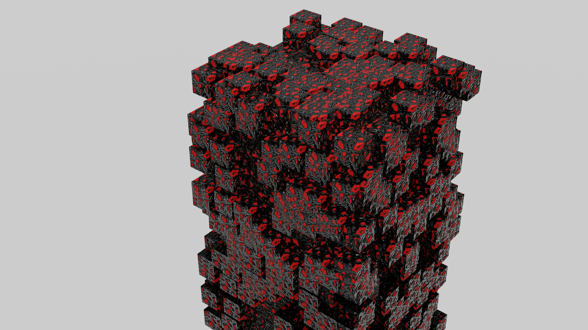
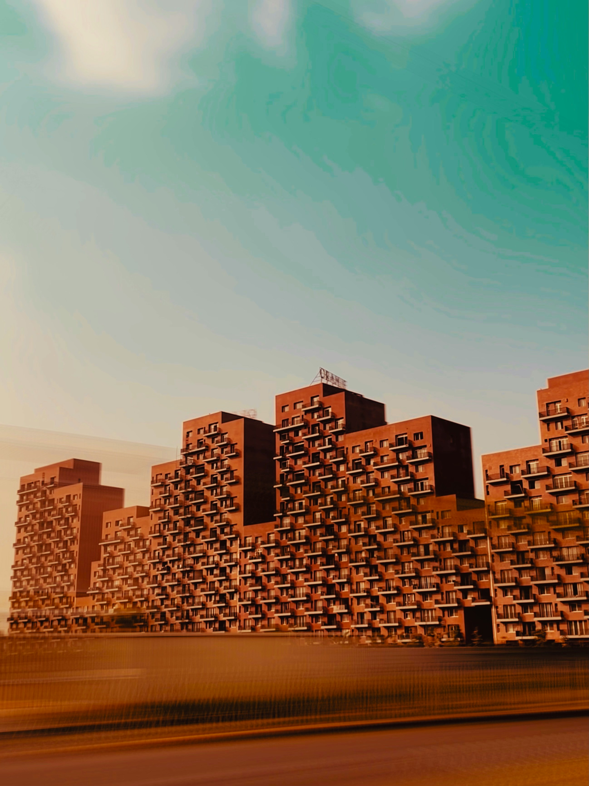

My First Survival Base
October 1, 2026 by Sarafina Bowen

Every Minecraft adventure starts the same way: punching trees and hoping the first night goes well. This week I finally built a proper base on the side of a hill, with a farm, a mine entrance and a small storage room for all my supplies.
The best part was planning the layout before placing a single block. Having a clear plan saved me a lot of time and made the base feel much more organised. Next, I want to add a wall of torches so nothing spawns nearby.
Redstone Basics
September 24, 2026 by Sarafina Bowen

Redstone is basically electrical engineering with blocks. I started with simple doors, then moved on to levers, pressure plates and a few timed circuits. It reminded me a lot of the logic we cover in class.
My favourite build so far is an automatic door that opens when you step on a hidden plate. It took a few failed attempts, but debugging redstone is great practice for debugging code, since you test, fix and test again.